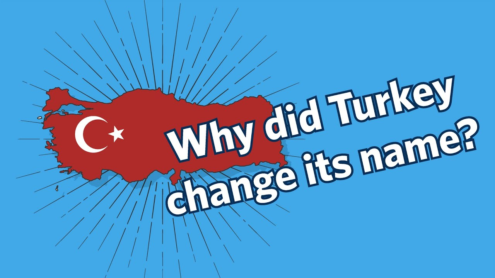

Turkey CHANGES NAME. WHY?!
There's no way TURKEY is changing it's name.
By JB
The name change was adopted within Turkish borders in December 2021, when Turkish President Recep Tayyip Erdogan announced that "Turkey" was no longer the "best way" to represent the culture of the people. "The phrase Turkiye represents and expresses the culture, civilization and values of the Turkish nation in the best way," he added.
Erdogan also demanded that labels read "Made in Turkiye" on export products instead of "Made in Turkey," and documents from the country's government began to read "Turkiye" after the announcement.
Other nations have changed their names in recent years. In 2019, Macedonia changed its name to the "Republic of Northern Macedonia." That same year, the Netherlands dropped the name "Holland."But not all name changes have earned international recognition. Many international bodies, including the U.N., continue to use the term "Czech Republic" despite the nation's 2016 move to register under its short-form name, Czechia..
03 Comments
-

Person #2
 60 min ago
60 min ago
What would they even change it to?
-

Ryan
120 min ago
I'd never think this could've happened
Person #1
How would that process even work?